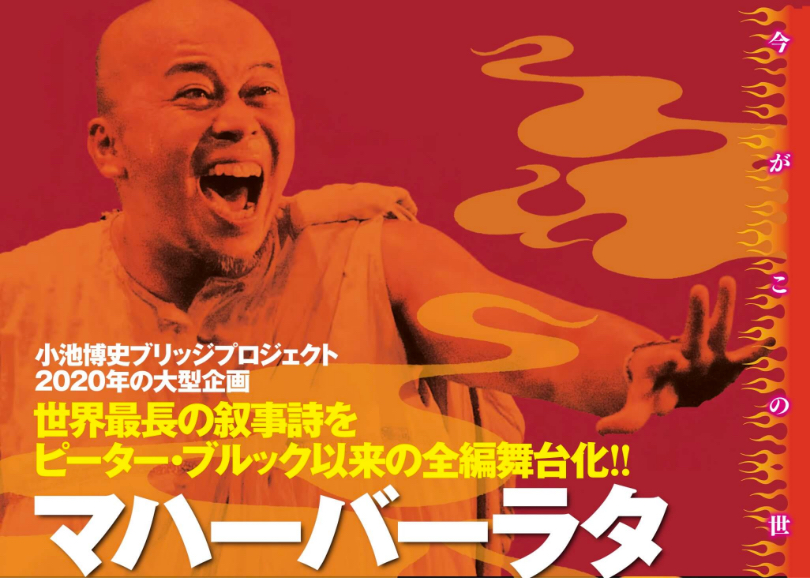

STORY
マハー（偉大な）、バーラタ（バラタ族）、つまり「偉大なバラタ族」の物語。神々が人間界を作り出すところから始まり、バラタ族の中のクル家とパーンドゥ家という二つの部族間の対立を巡るストーリー。神の血を引く個性豊かな登場人物たちによる差別、対立、欲望、嫉妬など、生の苦しみが描かれ、最終的には一族が破滅していく。
世界的な文学作品古代ギリシャの「イーリアス」「オデュッセイア」と並ぶ世界三大叙事詩の一つに数えられており、「ラーマーヤナ」と双璧を成すインド二大叙事詩の一つ。原語はサンスクリット語であるが、全18巻、10万詩節を超えるその長さは聖書の約4倍と言われ、原典の日本語訳はいまだ完結していない。
インドだけでなくアジア全般で広く知られた作品であり、TVドラマや映画の原案として使われることも多い。全編舞台化の難しさ日本では、イギリスの演出家ピーター・ブルックがワールドツアーの一環として1988年6月に銀座セゾン劇場で上演。三部作であったが、上演時間は9時間にも及んだ。
日本人の作品としては演出家・宮城聰が『マハーバーラタ～ナラ王の冒険』や歌舞伎作品『極付印度伝マハーバーラタ戦記』として、「マハーバーラタ」の長大なストーリーの一部分を舞台化した。全編上映はブルック以外にめぼしい作品は世界的にも存在しない。

COMMENTS
舞台関係者のみならず各界著名人からコメントが届いています！
京都佛立ミュージアム館長 長松清潤
「文に非ず、其の義に非ず、唯だ一部の意のみ。」
まずこの聖句が浮かんだ。境界線に立つ人類。超越する意志。小池博史氏の心象が生み出したアバターが乱舞しながら深層意識に波紋を起こしてゆく。